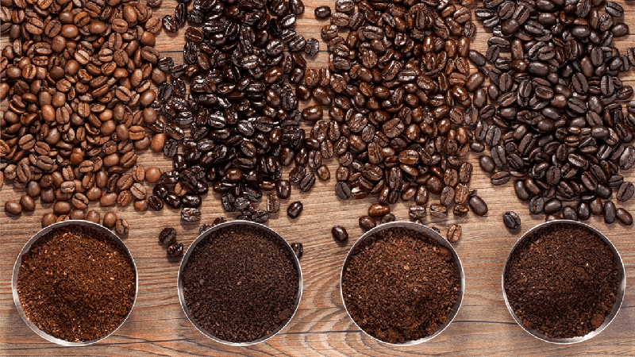

Waddle Sips
Beans
Roasts
Caffine
Four most common types of coffee beans
Arabica (Coffea Arabica)
One of the key distinguishing features of Arabica beans is their exquisite aroma, characterized by floral and fruity notes with hints of blueberry. This aromatic bouquet, coupled with a nuanced flavor profile, sets Arabica apart from other coffee varieties. The beans' higher lipid content contributes to a silky texture in the brewed coffee, enhancing the overall drinking experience. Additionally, Arabica beans boast a sugar content twice that of Robusta beans, adding to their inherent sweetness and depth of flavor.
While Arabica beans offer a delightful sensory experience, they also pose challenges for growers. Cultivation requires meticulous care and attention, particularly in regions susceptible to pests and diseases such as the notorious coffee leaf rust. Farmers must employ various strategies, including organic farming practices and disease-resistant varieties, to safeguard their Arabica crops and ensure a healthy yield.
Despite the challenges, Arabica coffee thrives in diverse environments, primarily in Central and South America. Countries like Colombia, Brazil, and Ethiopia are renowned for their high-quality Arabica production, each offering unique flavor profiles influenced by factors such as altitude, soil composition, and climate.
In addition to its sensory appeal, Arabica coffee is prized for its moderate caffeine content, making it a preferred choice for those seeking a flavorful yet milder brew. With approximately 1.5% caffeine content, Arabica coffee provides a gentle energy boost without the overpowering jolt associated with higher-caffeine varieties.
Summary: Arabica coffee beans represent a pinnacle of quality and flavor in the global coffee market. From their ancient origins in Ethiopia to their widespread cultivation in diverse regions, Arabica beans continue to captivate coffee lovers with their unparalleled aroma, sweetness, and complexity, making them an indispensable component of the world's coffee culture.
Robusta (Coffea Canephora)
Robusta coffee beans, constituting a significant portion (30-40%) of the global coffee market, offer a distinct alternative to Arabica beans with their robust flavor profile and unique characteristics. Originally hailing from Africa, particularly the Congo Basin, Robusta beans have found their stronghold in Vietnam, where they are predominantly cultivated today. Recognizable by their compact, rounded shape and pronounced crease, Robusta beans stand in stark contrast to the more elongated Arabica variety.
The flavor of Robusta coffee is characterized by its earthy and bold qualities, often accompanied by nutty undertones. While aficionados appreciate its robustness, it's worth noting that Robusta beans may occasionally elicit comparisons to charred rubber due to their strong flavor profile. Despite this, Robusta beans have garnered a dedicated following among coffee enthusiasts seeking a bolder, more intense experience.
True to their name, Robusta plants exhibit remarkable resilience and vigor, thriving in a wide range of climates and terrains. This resilience translates into a higher caffeine content compared to Arabica beans, with Robusta boasting an impressive caffeine content of around 2.7%. This higher caffeine concentration contributes to the beans' bold flavor profile and adds to their appeal for those seeking a potent pick-me-up.
One of the key advantages of Robusta beans is their affordability and durability. These qualities make them a popular choice for use in instant coffee and blends, where their bold flavor and intense caffeine kick are highly prized. Robusta beans are often incorporated into espresso blends to add depth and crema, as well as to provide a strong backbone to diverse coffee blends.
Summary: Robusta coffee beans offer a bold and intense alternative to the more delicate Arabica variety. With their earthy flavor profile, higher caffeine content, and robust character, Robusta beans have carved out a significant niche in the global coffee market. Whether enjoyed in espresso shots, blended coffees, or instant brews, Robusta beans continue to be valued for their affordability, durability, and unmistakable flavor profile.
Liberica (Coffea Liberica)
Liberica coffee beans, often considered an anomaly in the coffee world, comprise a mere fraction, less than 2%, of the global coffee output. Originating from Liberia in West Africa, Liberica beans possess a distinctive and unmistakable character, making them a unique addition to the world of coffee. These beans are characterized by their almond-shaped appearance, setting them apart from the more common oval or rounded beans of Arabica and Robusta varieties.
What truly distinguishes Liberica coffee is its rich and smoky flavor profile, which is often underscored by floral and fruity notes. This combination of flavors offers a sensory experience that is truly unlike any other in the coffee world. Despite their relatively low caffeine content, averaging around 1.2%, Liberica beans capture the attention of discerning coffee enthusiasts who appreciate their bold and distinctive taste.
In regions like the Philippines, Liberica beans hold a special place in coffee culture and are affectionately known as Kapeng Barako. Here, they have developed a loyal following among coffee aficionados who appreciate their unique flavor profile and cultural significance. However, in Western markets, Liberica coffee remains less common due to its limited availability and unique taste profile.
Cultivating Liberica coffee presents its own set of challenges, primarily due to the bean's low yield and specific cultivation requirements. Growers must exercise careful stewardship and employ meticulous cultivation practices to ensure a successful harvest. Despite these challenges, Liberica coffee continues to find a steadfast following, particularly in Southeast Asia, where its distinct flavor and cultural significance are celebrated.
Summary: Liberica coffee beans may be a rarity in the global coffee market, but their unique characteristics and rich flavor profile make them a noteworthy addition to the world of coffee. From their origins in West Africa to their cultivation in Southeast Asia, Liberica beans offer a sensory experience that captivates those who seek something truly distinctive in their cup.
Excelsa (Coffea Excelsa Or Coffea Liberica Var. Dewevrei)
Excelsa coffee beans, once considered a distinct species but now classified as a variant of Liberica, bring a unique dimension to the world of coffee. Sporting an elongated, almond-shaped profile reminiscent of their parent bean, Excelsa beans carve out a niche in the global coffee market, representing approximately 7% of total production. While sharing some similarities with Liberica, Excelsa beans offer their own distinctive flavor profile, setting them apart in the coffee landscape.
What distinguishes Excelsa coffee is its vibrant and tangy flavor profile, characterized by fruity accents that punctuate each sip. This lively flavor profile adds a layer of complexity to coffee blends, enhancing their overall taste and providing a delightful sensory experience for coffee connoisseurs. Excelsa beans are prized for their ability to infuse blends with a unique flavor profile that tantalizes the palate and leaves a lasting impression.
Primarily found in Southeast Asia, Excelsa coffee's rarity contributes to its sought-after status among coffee enthusiasts. Its limited availability adds allure and exclusivity to the beans, making them a coveted addition to coffee blends and specialty brews. Excelsa beans are often blended harmoniously with other varieties such as Robusta or Arabica, creating captivating flavor profiles that appeal to a wide range of tastes and preferences.
In the midst of a diverse array of coffee options, Arabica remains a perennial favorite among consumers. Known for its balance between quality and accessibility, Arabica coffee continues to dominate the global market, offering a consistent and enjoyable coffee experience for enthusiasts worldwide.
Summary: Excelsa coffee beans offer a unique and vibrant flavor profile that sets them apart in the world of coffee. With their tangy notes and fruity accents, Excelsa beans add complexity and depth to coffee blends, making them a sought-after choice for those seeking a distinctive and memorable coffee experience.
Shop for beans
Link
Link
Link
Link